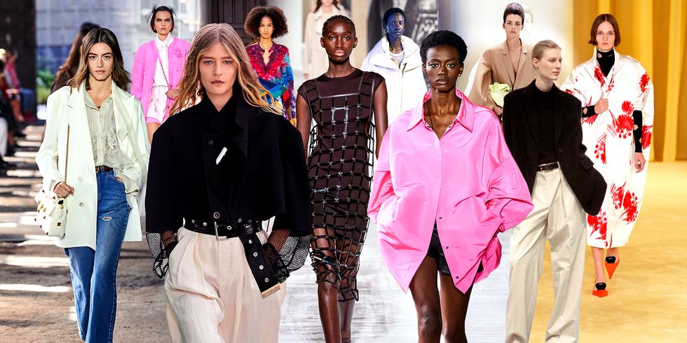

Written by Faith Hutson
Sept 15, 2021
The “20-year Rule” regarding fashion trends is as old as time. Experts claim that popular clothing trends right now will regain popularity roughly 20 years in the future. Though this rule may seem hard to believe, especially when looking back at old trends like shoulder pads and gaucho pants, there is some serious truth to it. Right now, Y2K fashion trends are all the rage. From velour tracksuits to bedazzled sunglasses, no one can seem to get enough. Yet, two years ago, if you told me I would not only own, but wear a bright pink Juicy Couture tracksuit, I would have laughed in your face.
Similarly, the general fashion cycle follows trends from introduction, to sales increase and peak, and then ultimately to the decline and rejection of the trend. Below is a representation of how the 20-year rule and the fashion cycle intertwine.
While these rules and cycles have been set in stone for decades now, the COVID-19 pandemic has completely uprooted and accelerated the lifespan of fashion trends.
When the pandemic hit, the world stopped–but online shopping didn’t. It’s no secret that people suddenly had exponentially more time on their hands, as well as a desire for a new wardrobe. Who needs jeans and collared shirts just to sit at home? Customers started going straight to the pajama and loungewear sections of online stores. In fact, purchases of sweats increased by 80 percent last April, with Google searches for the garment hitting a 14-year high.
As summer of 2020 approached and people began leaving the house slightly more, the rapid nature of pandemic trends became apparent. With not much to do, all eyes were on social media apps, constantly seeing what influencers were doing and wearing. Luckily for customers, fast fashion online brands pump out new clothes just as quickly as they are demanded. This meant that everyday customers were able to have an outfit in their closet just days after seeing Kendall Jenner wearing it.
But are these trends going to last? Many indicators point to no.
First and foremost, fast fashion is “fast” for a reason.
Through tracking trends, the fast fashion industry is able to produce clothes right as they become trendy. The low prices and quick shipping allow countless customers to purchase the clothes, and soon enough, the clothes have completely lost their charm and appeal. Because mass amounts of people own the same item, it is no longer new and special. The hyperfixation on currently trending statement pieces is exciting in the moment, yet it leaves many people looking the same as everyone else, and ultimately disliking the clothes much more quickly than they would during a typical fashion cycle.
I certainly foresee the fashion cycle only picking up speed from here. While it is interesting and inspiring to see each trend come and go, I predict that as a society, we will become much less dependent on trends and cycles. Rather than buying the same pieces that everyone else has, people will start developing their own personal style to stand out. There will be a greater interest in vintage, one-of-a-kind clothing, as they will be like a breath of fresh air compared to the overdone pieces that are viral on TIkTok that week. I am nothing short of thrilled to see people’s style blossom in their own, individualistic way in the coming years.
Read More -->